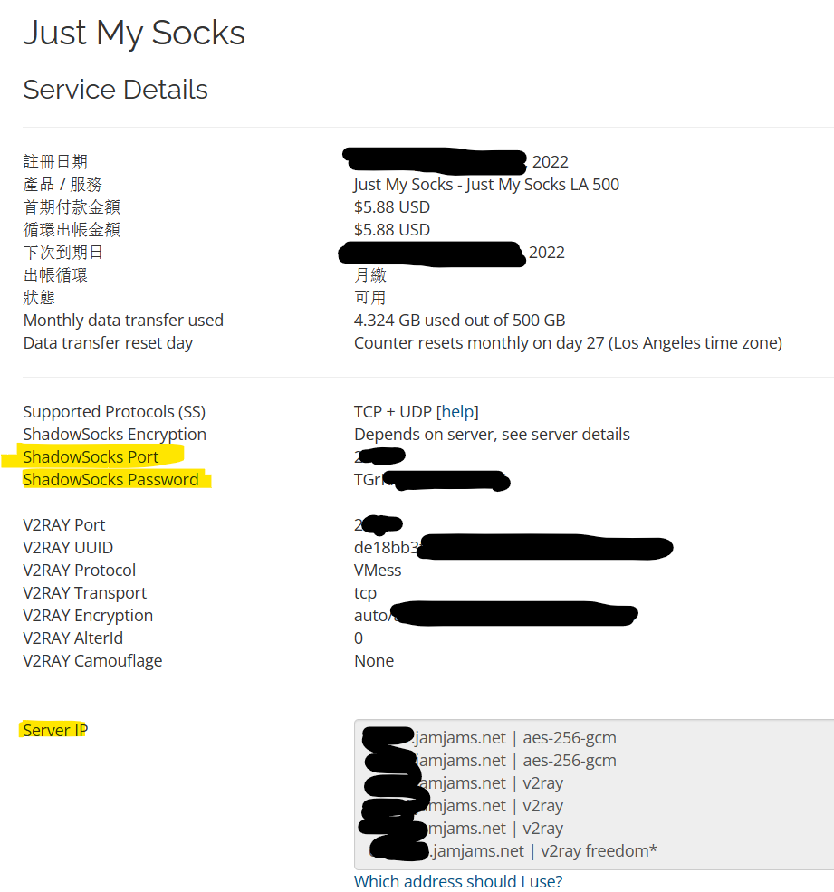
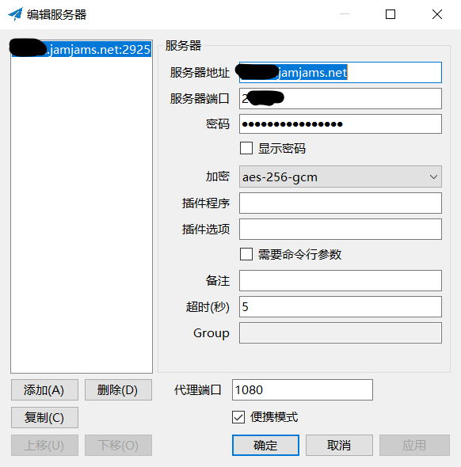
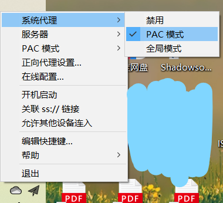

新年新气象，更换了代理方式，简单记录如下。如今的互联网环境实在可称荆棘遍地、壁障重重。
Just My Socks订阅
注：Just My Socks对v2ray(包括v2ray最初的版本Shadowsocks)的支持比较好。
Just My Socks官网镜像地址如下Just My Socks 。服务器地址、端口和密码在订阅后会直接给出。我用得多所以买了500G/月，相对也就贵一点，大概三十几块一个月。用得少可以从其他渠道购买。信息单如下：（我们所需的信息用荧光笔标出，也就是直接填入下面的东西：端口、密码和ip。注意加密方式要更改成对应的aes-256-gcm）

Shadowsocks设置
简要说明（不看也没关系）：
- 常见的代理有Clash，V2ray等等。V2ray仅支持Vmess协议，而Clash在此基础上更支持ss/ssr协议。
- V2ray向下(Shadowsocks)兼容，功能复杂，可以作为一个平台实现自己的开发；而Shadowsocks功能单一，同时使用起来十分简单。
这里使用Shadowsocks，下载地址为Release 4.4.1.0 · shadowsocks/shadowsocks-windows (github.com)，压缩包大小也就几MB，使用极其简单，这也是我选择它的主要原因。shadowsocks的设置（与上面对应关系）如下：
| 上面的信息 | 这里的设置 |
|---|---|
| Port | 服务器端口 |
| Password | 密码 |
| Server IP | 服务器地址 |
| Server IP | 加密 |
服务器地址需要填写订阅的服务器的地址，五个里面随便选一个就行了。虽然直接使用诸如“65.49.222.xx”也是可以接受的，但是为了防止IP失效，尽量使用domine names，也就是我下面填写的“c67s1.jamjams.net ”。（注意在v2ray中，ip地址并没有说明是什么ip地址，要写服务器的地址，不要想当然写成my ip。）当然，这里用的是shadowsocks，那就没什么关系了。

电脑代理设置
如果这个地方没有改，那么电脑会连不上网。其实也就是浏览器的代理设置。
我的电脑版本是win10。设置-网络和internet-代理，需要更改两处地方：
1、自动设置代理-自动检测设置-开
2、手动设置代理-
使用代理服务器-开
地址-127.0.0.1
端口：1080
v2ray另有较为详细的教程：json配置教程，黏贴一小段代码如下，仅供参考：
"inbounds": [
{
"port": 1080, // SOCKS 代理端口，在浏览器中需配置代理并指向这个端口
"listen": "127.0.0.1",
"protocol": "socks",
"settings": {
"udp": true
}
}
]
PAC模式设置
目的是：只在登录某些网站时使用代理，其余网站用本地ip正常登录。Shadowsocks小图标：系统代理-PAC模式。
